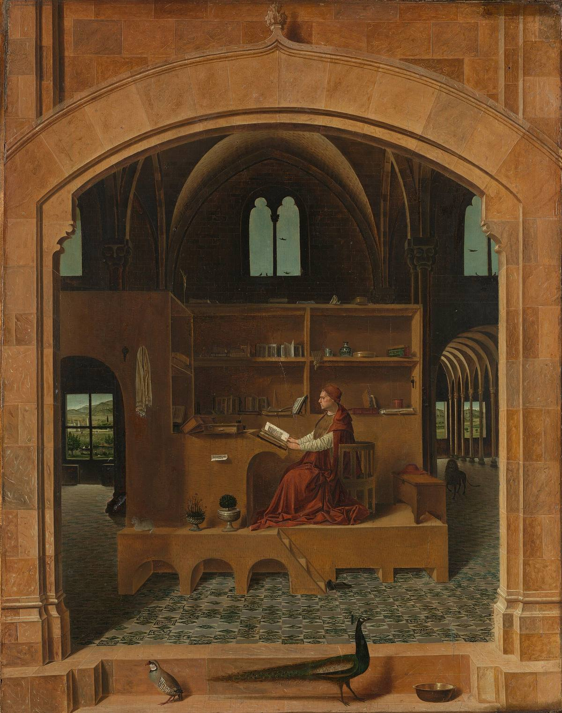

Grand TourSéquences prêtes à l’emploi · Français, anglais · Tous niveaux

Antonello da Messina, Saint Jérôme dans son étude, vers 1475, huile sur bois, 45,7 cm sur 36,2 cm, The National Gallery, Londres. Domaine public. Reproduction via Wikimedia Commons. Voir la notice
Méthodologie · Lettres · Lycée général et technologique · Version courte pour le baccalauréat professionnel
La dynamique de l’analyse repose en partie sur les verbes qui mettent la réflexion en mouvement
Choisir le verbe juste selon l’intention du texte, pour le commentaire et la dissertation.
Sans JavaScript, tous les onglets restent visibles à la suite. Les réponses se trouvent sous chaque exercice.
Grand Tour
La dynamique de l’analyse repose en partie sur les verbes qui mettent la réflexion en mouvement
Commentaire et dissertation · Lycée général et technologique · Version courte pour le baccalauréat professionnel
Une leçon de 55 minutes, minutée sur 52 minutes, pour remplacer le tour trop usé « l’auteur montre que » par un verbe juste, selon ce que le texte fait vraiment.
Jérôme est à son pupitre, parmi les livres. Il ne se contente pas de « montrer » un texte : il le lit, le traduit, l’interroge, en pèse les mots. C’est le geste de la copie. Dans le commentaire comme dans la dissertation, un verbe d’analyse n’est pas un ornement. Il dit l’intention : souligner, construire, faire sentir, dénoncer, nuancer.
Six familles de verbes, avec leur construction. Des tournures soutenues pour l’analyse et le devoir. Des exercices, sur des œuvres du domaine public. Une étape de la spirale de Gorse : « J’analyse : quel verbe pour quel effet ». Puis : comment passer de la spirale au paragraphe rédigé, dans le commentaire et dans la dissertation. Une version courte pour le baccalauréat professionnel. Une fiche à imprimer, en PDF, Word et LibreOffice.
Pour : lycée général et technologique, épreuve anticipée de français, commentaire et dissertation. Une version courte est prévue pour le baccalauréat professionnel, à l’écrit argumentatif.
Le but n’est pas d’apprendre une liste par cœur, ni de chasser « montrer » à tout prix. « Montrer » reste juste quand le texte donne vraiment quelque chose à voir. Ce qu’il faut éviter, c’est le verbe passe-partout, répété à chaque phrase, et les verbes maladroits qui prêtent à l’auteur un crime, un gain ou un labeur. Les élèves classent, justifient, puis réécrivent.
Avant de choisir un verbe, on se demande ce que le texte fait. Ensuite seulement, on le nomme. Chaque verbe a une construction : on ne l’emploie pas n’importe comment.
Montrer et souligner
Quand le texte attire l’attention sur un élément, le rend visible, le place au premier plan.
souligner : souligner que + indicatif ; souligner + nom. Il souligne que le soldat est déjà mort. Il souligne l’ironie de la chute.
mettre en évidence : mettre en évidence + nom. Il met en évidence le contraste entre le val lumineux et les deux blessures.
mettre en lumière : mettre en lumière + nom. Il met en lumière l’injustice faite à l’agneau.
faire ressortir : faire ressortir + nom. Il fait ressortir l’écart entre le rêve de luxe et la vie réelle.
révéler : révéler que + indicatif ; révéler + nom. La dernière phrase révèle que le soldat a été tué. Elle révèle la mort.
dévoiler : dévoiler + nom ; dévoiler que + indicatif. La chute dévoile la fausseté du bijou. Elle dévoile que la rivière ne valait presque rien.
Construire
Quand le texte assemble, organise, donne une forme à un portrait, à un contraste, à une progression.
construire : construire + nom. Il construit une opposition entre le faible et le fort. On ne dit pas « construire que ».
composer : composer + nom. Il compose un tableau du val, d’abord lumineux, puis funèbre.
élaborer : élaborer + nom. Il élabore un parallèle entre le poète et l’oiseau.
bâtir : bâtir + nom. Il bâtit un contraste entre le logis honnête et la violence de la rue.
structurer : structurer + nom. Il structure le récit autour d’une chute retardée.
orchestrer : orchestrer + nom. Il orchestre les voix du loup et de l’agneau. Ce verbe est plus fort : on le réserve à un texte qui dispose vraiment plusieurs éléments.
Installer un effet
Quand le texte produit un climat, un registre, une réaction chez le lecteur.
instaurer : instaurer + nom. Il instaure un climat de paix, avant de le briser.
créer : créer + nom. Il crée un effet de surprise à la dernière ligne.
installer : installer + nom. Il installe un doute sur la valeur des apparences.
mettre en place : mettre en place + nom. Il met en place un dispositif ironique, de l’ouverture jusqu’à la chute.
susciter : susciter + nom. Il suscite la pitié, puis l’indignation.
produire : produire + nom. Il produit un choc en révélant que le bijou était faux. On ne dit pas « produire que ».
Faire sentir
Quand le texte donne à deviner, à éprouver, sans tout dire.
suggérer : suggérer que + indicatif ; suggérer + nom. Il suggère que la mort est déjà là, avant de la nommer. Il suggère la mort.
évoquer : évoquer + nom. Il évoque un sommeil d’enfant. On évite « évoquer que ».
laisser entendre : laisser entendre que + indicatif. Il laisse entendre que la force tient lieu de droit.
faire sentir : faire sentir + nom ; faire sentir que + indicatif. Il fait sentir le froid de la plaine. Il fait sentir que l’homme est seul.
Dénoncer et critiquer
Quand le texte s’en prend à une injustice, à un travers, à un pouvoir. On ne les emploie que si le texte le fait vraiment.
dénoncer : dénoncer + nom. Il dénonce la loi du plus fort. Il dénonce le massacre d’un enfant.
critiquer : critiquer + nom. Il critique le goût du luxe et l’attachement aux apparences.
railler : railler + nom. Il raille les excuses du loup, qui change d’accusation à chaque réplique.
fustiger : fustiger + nom. Il fustige le pouvoir qui fait coudre un linceul d’enfant. Verbe très fort, à réserver à une attaque nette, souvent pamphlétaire.
Nuancer
Quand le texte atténue, précise, empêche un jugement trop simple.
nuancer : nuancer + nom. Il nuance le portrait de Mathilde, à la fois vaniteuse et digne de pitié.
atténuer : atténuer + nom. Le sourire de l’enfant malade atténue d’abord l’horreur de la scène.
relativiser : relativiser + nom. La chute relativise dix années de sacrifices.
Une règle simple
On ne cherche pas le verbe le plus rare. On cherche le verbe le plus juste. « Montrer » reste possible, une fois, si le texte donne vraiment quelque chose à voir. Ce qu’il faut varier, c’est le geste : souligner n’est pas dénoncer, et suggérer n’est pas révéler.
Une fois le verbe juste choisi, ces formulations aident à rédiger l’analyse et à articuler le devoir, dans le commentaire comme dans la dissertation.
1. Introduire l’intention et l’action de l’auteur
Pour analyser un procédé d’écriture ou une idée directrice, privilégiez des formulations qui soulignent la maîtrise de l’écrivain.
Mettre en lumière une idée.
L’auteur nous donne à voir...
L’écrivain met en exergue...
Le texte esquisse...
Cette scène cristallise...
Dévoiler un sens caché.
Il lève le voile sur...
L’œuvre révèle en filigrane...
L’auteur suggère avec subtilité...
Ce passage met à nu...
Dénoncer ou critiquer.
L’écrivain fustige...
Il tourne en dérision...
Le texte met en accusation...
L’auteur bat en brèche l’idée selon laquelle...
Créer une atmosphère ou une image.
La plume de l’auteur brosse le portrait de...
Il insuffle une dimension...
Ce procédé confère au récit une tonalité...
2. Interpréter et approfondir l’analyse
Après avoir cité le texte ou évoqué un exemple, utilisez ces expressions pour expliquer l’effet produit sur le lecteur.
Tirer une conclusion d’un procédé.
La proposition qu’il en fait nous conduit à penser que...
Ce choix stylistique invite le lecteur à s’interroger sur...
Dès lors, il apparaît que...
Souligner la portée symbolique.
Cette image revêt une dimension universelle...
Au-delà de la simple anecdote, l’auteur érige ce personnage en symbole de...
Ce motif fait écho à...
Nuancer ou complexifier un propos.
Toutefois, cette vision mérite d’être tempérée par...
L’ambivalence de ce passage réside dans...
Sous couvert de légèreté, l’auteur aborde en réalité...
3. Structurer et articuler le devoir (connecteurs choisis)
Pour fluidifier le passage d’une idée à l’autre dans votre développement.
Pour introduire un argument.
En premier lieu...
Il convient tout d’abord d’observer que...
Force est de constater que...
Pour ajouter ou amplifier.
Qui plus est...
À cela s’ajoute le fait que...
Bien plus, l’auteur va jusqu’à...
Pour opposer ou nuancer (antithèse).
A contrario...
En dépit de cette apparence...
À rebours de cette première lecture...
Force est pourtant de reconnaître que...
Toutefois, un regard plus attentif révèle que...
Pour conclure une partie (bilan partiel).
Ainsi se dessine...
C’est donc à travers ce prisme que...
En somme, l’auteur parvient à...
4. Formules clés pour l’introduction et la conclusion
Annoncer la problématique.
Dès lors, dans quelle mesure peut-on affirmer que... ?
On est alors en droit de se demander comment...
C’est précisément cette tension entre [X] et [Y] qui nourrit notre réflexion.
Élargir en conclusion (ouverture).
Cette réflexion trouve un écho singulier dans...
Ce questionnement préfigure déjà les préoccupations de...
À l’instar de [autre auteur ou autre œuvre], l’écrivain démontre que...
Comment s’en servir
Une tournure ne remplace pas l’analyse : elle l’introduit, l’articule ou la conclut. On la complète toujours par un fait du texte, une courte citation, et un verbe juste.
Les crochets [X], [Y], [autre auteur ou autre œuvre] sont des emplacements à remplir, selon le sujet et les œuvres de la classe.
La spirale de Gorse sert ici à choisir un verbe. On part de la phrase toute faite, puis on se resserre jusqu’à la phrase juste.
1 Je remarque.
La phrase usée : « l’auteur montre que ». Qu’est-ce qu’elle a de trop large, dans ce passage ?
2 Je repère.
Un détail, un mouvement, une chute : que fait le texte, sous les yeux, à cet endroit ?
3 Je comprends.
Quelle est l’intention ? Souligner, construire, installer un effet, faire sentir, dénoncer, nuancer ?
4 J’anticipe.
Quel verbe, et quelle construction, diront cette intention sans l’exagérer ?
5 Je trouve le sens.
J’écris une phrase de copie. Je vérifie le verbe, sa construction, et sa limite : le texte fait-il vraiment cela ?
Un modèle, avec Rimbaud
Les parfums ne font pas frissonner sa narine ;
Il dort dans le soleil, la main sur sa poitrine
Tranquille. Il a deux trous rouges au côté droit.
Arthur Rimbaud, « Le Dormeur du Val », octobre 1870, in Œuvres, texte établi par Paul Hartmann, Mercure de France, 1958, p. 53. Texte établi d’après Wikisource.
1 Je remarque.
On aurait envie d’écrire : « l’auteur montre que le soldat est mort ». La phrase est juste, mais trop large : elle dit le thème, pas le geste du poème.
2 Je repère.
Le sommeil, le sourire, la main sur la poitrine occupent presque tout le tercet. La mort n’apparaît qu’à la dernière ligne, par « deux trous rouges ».
3 Je comprends.
Le poème instaure d’abord un climat de paix, puis révèle la blessure. Il fait sentir le calme pour mieux produire un choc.
4 J’anticipe.
On peut dire : instaure (un climat), révèle (la mort), fait sentir (le calme). « Dénonce » irait trop loin : le poème ne s’en prend pas à un responsable.
5 Je trouve le sens.
Phrase possible : « Rimbaud instaure un climat de paix, puis révèle, à la dernière ligne seulement, que le soldat a été tué. » Limite : le poème ne commente pas la guerre, il la fait voir dans un corps.
CE Dans ce tercet, le poème fait surtout ceci :
A. Il dénonce nommément un général.
B. Il instaure un calme, puis révèle la mort à la dernière ligne.
Réponse B. Le poème ne nomme aucun responsable. Il fait sentir un sommeil paisible, puis révèle les « deux trous rouges ».
Faire dire le modèle à voix haute avant de l’écrire. Le point délicat est la limite : « dénoncer » et « fustiger » sont trop forts ici. Les réserver à Hugo, dans « Souvenir de la nuit du 4 », ou à La Fontaine quand on parle de la morale.
On travaille d’abord la lecture, puis la langue, puis l’écriture. Les réponses restent cachées tant qu’on n’a pas choisi de les afficher.
CE Exercice 1. Remplacer « montre »
Dans chaque phrase, remplacez « montre » par un verbe plus juste. Gardez le même sens, et une construction correcte.
1. « L’auteur montre que le bijou était faux. »
Oh ! ma pauvre Mathilde ! Mais la mienne était fausse. Elle valait au plus cinq cents francs !…
Guy de Maupassant, « La Parure », in Contes du jour et de la nuit, C. Marpon et E. Flammarion, 1885, p. 93. Texte établi d’après Wikisource.
2. « L’auteur montre que la nature parle à l’homme. »
La Nature est un temple où de vivants piliers
Laissent parfois sortir de confuses paroles ;
L’homme y passe à travers des forêts de symboles
Qui l’observent avec des regards familiers.
Charles Baudelaire, « Correspondances », in Les Fleurs du mal, Poulet-Malassis et de Broise, 1861, p. 15. Texte établi d’après Wikisource.
3. « L’auteur montre que le plus fort a toujours raison. »
La raison du plus fort est toujours la meilleure :
Nous l’allons montrer tout à l’heure.
Jean de La Fontaine, « Le Loup et l’Agneau », Fables, livre I, fable X, éd. Bernardin-Béchet, 1874, p. 41. Texte établi d’après Wikisource.
1. La chute dévoile que le bijou était faux. On peut aussi : révèle la fausseté du bijou.
2. Baudelaire suggère que la nature parle à l’homme, par des « confuses paroles ». On peut aussi : évoque un langage secret de la nature. « Dénonce » serait trop fort.
3. Attention : La Fontaine écrit lui-même « montrer », mais sur le mode ironique. On dira : il laisse entendre que la force tient lieu de droit ; ou : il raille la logique du plus fort ; ou : il dénonce la loi du plus fort. « Montrer » ici n’est pas un verbe d’analyse : c’est le mot du fabuliste, à commenter.
Choisissez la meilleure réécriture.
1. À la fin de « La Parure », le mieux est :
A. L’auteur commet la révélation que le bijou est faux.
B. La chute dévoile que le bijou était faux.
2. Dans les premiers vers de « Correspondances », le mieux est :
A. Baudelaire suggère que la nature parle à l’homme.
B. Baudelaire gagne que la nature parle à l’homme.
1. B. « Dévoile » convient à une vérité gardée jusqu’à la dernière phrase. « Commet » est maladroit.
2. A. « Suggère que » va avec un langage indirect. « Gagne que » n’existe pas dans une copie.
CE Exercice 2. Choisir le verbe selon l’intention
Pour chaque extrait, dites l’intention, puis choisissez un verbe de la bonne famille.
1. Intention à trouver, puis un verbe.
L’enfant avait reçu deux balles dans la tête.
Le logis était propre, humble, paisible, honnête ;
On voyait un rameau bénit sur un portrait.
Une vieille grand’mère était là qui pleurait.
Victor Hugo, « Souvenir de la nuit du 4 », in Les Châtiments, Hetzel-Quantin, 1882, p. 99. Texte établi d’après Wikisource. L’édition écrit « grand’mère ».
2.
Dans la plaine rase, sous la nuit sans étoiles, d’une obscurité et d’une épaisseur d’encre, un homme suivait seul la grande route de Marchiennes à Montsou, dix kilomètres de pavé coupant tout droit, à travers les champs de betteraves.
Émile Zola, Germinal, G. Charpentier, 1885, première partie, chapitre I, p. 1. Texte établi d’après Wikisource.
3.
Le Poëte est semblable au prince des nuées
Qui hante la tempête et se rit de l’archer ;
Exilé sur le sol au milieu des huées,
Ses ailes de géant l’empêchent de marcher.
Charles Baudelaire, « L’Albatros », in Les Fleurs du mal, Poulet-Malassis et de Broise, 1861, p. 12. Texte établi d’après Wikisource. L’édition écrit « Poëte ».
1. Intention : dénoncer, et aussi construire un contraste. Hugo bâtit un contraste entre le logis honnête et la violence. Il dénonce le meurtre d’un enfant. À la fin du poème, on pourra dire qu’il fustige le pouvoir : le verbe est alors justifié par l’attaque contre « monsieur Bonaparte » et contre « monsieur Napoléon ».
2. Intention : faire sentir, et installer un effet. Zola fait sentir la solitude et le froid. Il instaure un climat d’obscurité et d’hostilité. Il installe le lecteur dans une plaine sans repère.
3. Intention : construire, et faire sentir. Baudelaire élabore un parallèle entre le poète et l’albatros. Il fait sentir la maladresse de l’être d’exception, une fois jeté au sol. « Railler » conviendrait plutôt aux matelots, pas au poète qui les observe.
1. Dans les vers d’Hugo, l’intention principale est :
A. Nuancer un éloge de l’empereur.
B. Dénoncer le meurtre d’un enfant, en contrastant le logis paisible et la violence.
2. Dans l’ouverture de Germinal, le mieux est :
A. Zola fait sentir la solitude et le froid de la plaine.
B. Zola s’attelle à une description de la plaine.
1. B. Le poème attaque une violence politique. Ce n’est pas un éloge.
2. A. « Faire sentir » dit l’effet. « S’attelle à » parle du labeur de l’écrivain, pas du texte.
CE Exercice 3. Corriger la construction (Étude de la langue)
Ces phrases ont un verbe possible, mais une construction fautive. Réécrivez-les.
Maupassant met en évidence que Mathilde a tout perdu pour un bijou faux.
Zola construit que l’homme est seul dans la nuit.
Baudelaire évoque que les parfums, les couleurs et les sons se répondent.
Hugo produit que le lecteur est indigné.
La Fontaine suggère l’agneau est innocent.
1. Maupassant met en évidence la vanité du sacrifice. (mettre en évidence + nom) On peut aussi : révèle que Mathilde a tout perdu pour un bijou faux.
2. Zola construit un portrait d’homme seul, dans la nuit. (construire + nom) On peut aussi : fait sentir que l’homme est seul dans la nuit.
3. Baudelaire évoque une correspondance entre les parfums, les couleurs et les sons. (évoquer + nom) On peut aussi : suggère que les parfums, les couleurs et les sons se répondent.
4. Hugo suscite l’indignation du lecteur. (susciter + nom ; produire + nom : « produit un effet d’indignation ») On ne dit pas « produire que ».
5. La Fontaine suggère que l’agneau est innocent. (suggérer que + indicatif) Ou : laisse entendre que l’agneau est innocent.
Quelle phrase est correctement construite ?
1.
A. Maupassant met en évidence que Mathilde a tout perdu.
B. Maupassant met en évidence la vanité du sacrifice.
2.
A. La Fontaine suggère que l’agneau est innocent.
B. La Fontaine suggère l’agneau est innocent.
1. B. « Mettre en évidence » s’emploie avec un nom.
2. A. « Suggérer que » demande un verbe à l’indicatif. Il manque « que » dans B.
CE Exercice 4. Trier : verbe juste ou maladroit dans une copie ?
Certains verbes, parfois entendus pour « varier », sont impropres dans une copie. Classez chaque emploi, et expliquez.
L’auteur commet le portrait du personnage.
Hugo dénonce le meurtre d’un enfant.
L’auteur gagne un effet de surprise.
Baudelaire suggère une correspondance entre les sensations.
L’auteur cause le trouble dans notre perception du soldat.
Zola instaure un climat d’obscurité.
L’auteur s’adonne à la description de la plaine.
L’auteur s’attelle à une critique du luxe.
Maupassant structure le récit autour d’une chute.
L’auteur fabrique un tableau du val.
L’auteur exerce une description du logis.
Rimbaud révèle la mort à la dernière ligne.
L’auteur peut décider de nous émouvoir à la ligne 5.
La Fontaine raille les excuses changeantes du loup.
1. commet. On commet une faute, un crime, une erreur. Le verbe accuse l’auteur, il ne décrit pas un portrait.
3. gagne. Registre du sport, du jeu ou de l’argent. On ne « gagne » pas un effet dans une copie.
5. cause. « Causer » signifie soit « provoquer malgré soi », soit, au sens familier, « parler ». Ni l’un ni l’autre ne convient. On dira « suscite un trouble » ou « installe un trouble ».
7. s’adonne à. Le verbe désigne une habitude, souvent un loisir ou un vice. L’auteur n’est pas occupé à une activité : le texte décrit une plaine.
8. s’attelle à. Tour un peu familier, qui insiste sur l’effort pour se mettre au travail. La copie analyse le texte, pas le labeur de l’écrivain. On dira : « Maupassant critique le goût du luxe. »
10. fabrique. Verbe du travail manuel ou de l’industrie. « Fabriquer un tableau » sonne artificiel, presque péjoratif. On dira « compose un tableau ».
11. exerce. On exerce un métier, un droit, parfois une pression. « Exercer une description » est une construction maladroite. On dira « compose une description » ou « décrit le logis ».
13. peut décider. « Peut » affaiblit l’analyse. « Décider » prête à l’auteur une décision d’appareil. On dira ce que le texte fait : « Rimbaud émeut le lecteur, à la dernière ligne, en révélant la blessure. »
Pour chaque phrase, choisissez : juste ou maladroit.
1. « Hugo dénonce le meurtre d’un enfant. »
A. Juste.
B. Maladroit.
2. « L’auteur commet le portrait du personnage. »
A. Juste.
B. Maladroit.
3. « L’auteur gagne un effet de surprise. »
A. Juste.
B. Maladroit.
4. « Rimbaud révèle la mort à la dernière ligne. »
A. Juste.
B. Maladroit.
1. A. « Dénoncer » convient à une attaque nette, comme chez Hugo.
2. B. On commet une faute, pas un portrait.
3. B. « Gagner » n’a pas sa place ici.
4. A. « Révéler » convient à une vérité gardée jusqu’à la fin.
PE Exercice 5. Réécrire un paragraphe de commentaire
Ce paragraphe est pauvre : le même verbe revient, et il ne dit pas le geste du poème. Réécrivez-le en trois phrases, avec des verbes justes, correctement construits.
Dans ce poème, l’auteur montre que le soldat est mort. Il montre aussi que la nature est belle. L’auteur montre que c’est triste.
Appuyez-vous sur « Le Dormeur du Val », déjà cité dans l’onglet « J’analyse ».
Rimbaud compose d’abord un tableau lumineux du val, où « chante une rivière ». Il instaure un climat de paix, proche du sommeil d’un enfant. Puis la dernière ligne révèle, sans commentaire, que le soldat a été tué : « Il a deux trous rouges au côté droit. »
D’autres verbes justes : fait sentir le calme, suggère la mort avant de la nommer, produit un choc. À éviter : dénonce la guerre (le poème ne désigne personne), commet un portrait, fabrique un paysage.
Quelle réécriture est la meilleure ?
A. Rimbaud instaure un climat de paix, puis révèle la mort à la dernière ligne.
B. L’auteur s’attelle à montrer que c’est triste et il gagne un bel effet.
Réponse A. Deux verbes justes, deux constructions correctes, et une progression fidèle au poème. B reprend des verbes maladroits.
PE Exercice 6. Un mini sujet de dissertation
Vous traiterez le sujet suivant, en vous appuyant sur les textes de la leçon et sur les œuvres étudiées en classe. Un plan en deux ou trois parties suffit. Dans chaque partie, au moins un verbe d’analyse devra être employé juste, et justifié.
« Nous l’allons montrer tout à l’heure. » La Fontaine annonce qu’il va « montrer » que la raison du plus fort est toujours la meilleure. Dans quelle mesure un texte littéraire se borne-t-il à montrer une idée ?
Le premier membre de la citation est tiré de Jean de La Fontaine, « Le Loup et l’Agneau », Fables, livre I, fable X, éd. Bernardin-Béchet, 1874, p. 41. Texte établi d’après Wikisource.
PO Avant d’écrire, dites à voix haute, en une minute : ce que le sujet vous demande, et un exemple où le texte fait plus que montrer (dénoncer, faire sentir, nuancer).
Ce sujet se traite en classe seulement si le temps le permet, sinon il devient le devoir. Pistes, à ne pas dicter telles quelles : 1. Un texte peut effectivement montrer, au sens de donner à voir (Rimbaud, Zola). 2. Mais « montrer » est souvent un masque : La Fontaine montrait pour railler, Hugo pour dénoncer, Maupassant pour dévoiler et relativiser. 3. D’où la nécessité, dans la copie, de nommer l’intention. Limite : tous les textes ne dénoncent pas ; il faut proportionner le verbe.
Pour commencer le sujet, la piste la plus juste est :
A. Tous les textes se contentent de montrer une idée, sans autre intention.
B. Un texte peut donner à voir une idée, mais il peut aussi dénoncer, faire sentir ou nuancer.
Réponse B. C’est précisément ce que le sujet demande de discuter. A ferme la dissertation avant de l’ouvrir.
Ces exercices reprennent uniquement les extraits déjà lus dans la leçon. Les corrigés sont réservés à la version prof.
CE Exercice A. Associer chaque tournure à son intention
Pour chaque formulation, donnez l’intention : mettre en lumière, dévoiler, dénoncer, ou créer une atmosphère.
L’écrivain met en exergue...
L’œuvre révèle en filigrane...
L’auteur bat en brèche l’idée selon laquelle...
Ce procédé confère au récit une tonalité...
1. « L’écrivain met en exergue... »
A. Mettre en lumière une idée.
B. Dénoncer ou critiquer.
2. « L’œuvre révèle en filigrane... »
A. Créer une atmosphère ou une image.
B. Dévoiler un sens caché.
3. « L’auteur bat en brèche l’idée selon laquelle... »
A. Dénoncer ou critiquer.
B. Mettre en lumière une idée.
4. « Ce procédé confère au récit une tonalité... »
A. Dévoiler un sens caché.
B. Créer une atmosphère ou une image.
1. Mettre en lumière une idée. 2. Dévoiler un sens caché. 3. Dénoncer ou critiquer. 4. Créer une atmosphère ou une image.
Version dys : 1. A. 2. B. 3. A. 4. B.
PE Exercice B. Réécrire une phrase plate
Réécrivez chaque phrase en utilisant une tournure de la partie 1 ou de la partie 2. Gardez le sens, et appuyez-vous sur l’extrait.
1. « L’auteur montre que le bijou était faux. »
Oh ! ma pauvre Mathilde ! Mais la mienne était fausse. Elle valait au plus cinq cents francs !…
Guy de Maupassant, « La Parure », in Contes du jour et de la nuit, C. Marpon et E. Flammarion, 1885, p. 93. Texte établi d’après Wikisource.
2. « L’auteur montre que le soldat est mort. »
Les parfums ne font pas frissonner sa narine ;
Il dort dans le soleil, la main sur sa poitrine
Tranquille. Il a deux trous rouges au côté droit.
Arthur Rimbaud, « Le Dormeur du Val », octobre 1870, in Œuvres, texte établi par Paul Hartmann, Mercure de France, 1958, p. 53. Texte établi d’après Wikisource.
1. Pour la chute de « La Parure », la meilleure réécriture est :
A. Ce passage met à nu la fausseté du bijou.
B. L’auteur gagne que le bijou était faux.
2. Pour le tercet de Rimbaud, la meilleure réécriture est :
A. Dès lors, il apparaît que ce sommeil est déjà la mort.
B. L’auteur s’attelle à montrer que le soldat est mort.
1. Exemples justes : « Ce passage met à nu la fausseté du bijou. » « Il lève le voile sur la vanité de dix années de sacrifices. » « Dès lors, il apparaît que le bijou ne valait presque rien. »
2. Exemples justes : « Dès lors, il apparaît que ce sommeil est déjà la mort. » « La dernière ligne met à nu la blessure : “Il a deux trous rouges au côté droit.” » « Ce choix stylistique invite le lecteur à s’interroger sur ce calme trop parfait. »
Version dys : 1. A. 2. A.
CE Exercice C. Choisir le bon connecteur
Complétez ce court développement avec un connecteur de la partie 3. L’un des trous demande un connecteur pour opposer ou nuancer.
(1) ________, La Fontaine semble raconter une simple dispute, au bord d’une « onde pure ».
(2) ________, un regard plus attentif révèle que le loup change d’accusation à chaque réplique.
Qui plus est, la fable s’ouvre déjà sur une sentence ironique : « Nous l’allons montrer tout à l’heure. »
(3) ________, l’auteur parvient à dénoncer la loi du plus fort, sans la prêcher de l’extérieur.
Les citations sont tirées de Jean de La Fontaine, « Le Loup et l’Agneau », Fables, livre I, fable X, éd. Bernardin-Béchet, 1874, p. 41. Texte établi d’après Wikisource.
Vous choisissez parmi : En premier lieu ; A contrario ; Toutefois ; En somme ; Bien plus. (Un même mot ne sert qu’une fois. « Toutefois » et « A contrario » conviennent tous les deux au trou 2, qui oppose ou nuance.)
Dans la phrase : « (2) ________, un regard plus attentif révèle que le loup change d’accusation », le connecteur juste pour opposer ou nuancer est :
A. En premier lieu.
B. Toutefois.
Pour conclure le développement, le mieux est :
A. En somme, l’auteur parvient à dénoncer la loi du plus fort.
B. En premier lieu, l’auteur parvient à dénoncer la loi du plus fort.
(1) En premier lieu (ou : Il convient tout d’abord d’observer que, si l’on complète la phrase). (2) Toutefois, ou A contrario, ou À rebours de cette première lecture : c’est le moment d’opposer ou de nuancer. (3) En somme (ou : Ainsi se dessine, si l’on ajuste légèrement la phrase).
« Bien plus » est déjà proche de « Qui plus est », déjà présent dans le texte : on ne le reprend pas au trou 3. « En premier lieu » ne convient ni au trou 2 ni au trou 3.
Version dys : 1. B. 2. A.
PE Exercice D. Compléter une problématique et une ouverture
Servez-vous des formules de la partie 4. Vous travaillez sur « La Parure » ou sur l’ouverture de Germinal, au choix.
1. Problématique. Complétez, en remplaçant [X] et [Y] : « C’est précisément cette tension entre [X] et [Y] qui nourrit notre réflexion. »
2. Ouverture. Rédigez une phrase d’ouverture avec l’une de ces formules : « Cette réflexion trouve un écho singulier dans... » ; « Ce questionnement préfigure déjà les préoccupations de... » ; « À l’instar de [autre auteur ou autre œuvre], l’écrivain démontre que... »
Rappel des extraits : la chute de « La Parure » (« Mais la mienne était fausse. Elle valait au plus cinq cents francs !… ») ; l’ouverture de Germinal (« Dans la plaine rase, sous la nuit sans étoiles... »). Sources : Maupassant, Flammarion, 1885, p. 93 ; Zola, Charpentier, 1885, première partie, chapitre I, p. 1. Textes établis d’après Wikisource.
1. Pour « La Parure », la meilleure problématique est :
A. C’est précisément cette tension entre l’apparence et la réalité qui nourrit notre réflexion.
B. C’est précisément cette tension entre [X] et [Y] qui nourrit notre réflexion, sans rien remplir.
2. Pour une ouverture sur Germinal, la meilleure phrase est :
A. À l’instar de Zola dans l’ouverture de Germinal, l’écrivain démontre que le récit peut faire sentir la solitude avant même de raconter une histoire.
B. À l’instar de [autre auteur ou autre œuvre], sans rien préciser.
1. La Parure. Exemple : « C’est précisément cette tension entre l’apparence et la réalité qui nourrit notre réflexion. » Autres couples justes : le luxe et la misère ; le rêve et le prix à payer.
1. Germinal. Exemple : « C’est précisément cette tension entre l’immensité de la plaine et la solitude de l’homme qui nourrit notre réflexion. » Ou : la nuit et l’espoir d’un abri.
2. Si l’on part de « La Parure » : « Cette réflexion trouve un écho singulier dans l’ouverture de Germinal, où la nuit “sans étoiles” fait déjà sentir une misère plus vaste que celle d’une seule destinée. » Si l’on part de Germinal : « À l’instar de Maupassant dans “La Parure”, l’écrivain démontre que le récit peut dévoiler, par une chute ou par un climat, ce que les apparences dissimulaient. » Les crochets doivent être remplis.
Version dys : 1. A. 2. A.
PEPO Exercice E. Rédiger un paragraphe d’analyse complet
Rédigez un paragraphe de six à huit lignes sur le tercet final du « Dormeur du Val ». Vous employez au moins trois tournures de la leçon (parties 1 à 3). Une courte citation, déjà lue, doit y figurer.
PO Avant d’écrire, dites à voix haute les trois tournures que vous comptez utiliser.
Les parfums ne font pas frissonner sa narine ;
Il dort dans le soleil, la main sur sa poitrine
Tranquille. Il a deux trous rouges au côté droit.
Arthur Rimbaud, « Le Dormeur du Val », octobre 1870, in Œuvres, texte établi par Paul Hartmann, Mercure de France, 1958, p. 53. Texte établi d’après Wikisource.
Quel paragraphe est le mieux rédigé ?
A. En premier lieu, Rimbaud nous donne à voir un val lumineux. Ce procédé confère au récit une tonalité de paix. Toutefois, un regard plus attentif révèle que « les parfums ne font pas frissonner sa narine ». Dès lors, il apparaît que ce sommeil est déjà la mort.
B. L’auteur montre que c’est triste. Qui plus est l’auteur montre que le soldat est mort. En premier lieu il gagne un bel effet.
Paragraphe modèle :
En premier lieu, Rimbaud nous donne à voir un val lumineux, où le soldat semble seulement endormi. Ce procédé confère au récit une tonalité de paix, presque enfantine. Toutefois, un regard plus attentif révèle que « les parfums ne font pas frissonner sa narine ». Dès lors, il apparaît que ce sommeil est déjà la mort. La dernière ligne met à nu la blessure : « Il a deux trous rouges au côté droit. » En somme, l’auteur parvient à faire sentir le calme pour mieux dévoiler, sans le nommer d’abord, le geste qui a tué le jeune soldat.
On valorise au moins trois tournures justes, une citation courte, et une limite : le poème ne dénonce personne. Version dys : A.
La spirale de Gorse sert à trouver le juste sens d’un passage. Les tournures soutenues servent ensuite à le rédiger. On va de l’un à l’autre : d’abord pour un paragraphe de commentaire, puis pour un paragraphe de dissertation.
Méthode de la spirale conçue par Madame Carole Paoli Pompougnac
On reprend le tercet déjà lu dans l’onglet « J’analyse ». La spirale est maintenant remplie en vue de la rédaction.
Les parfums ne font pas frissonner sa narine ;
Il dort dans le soleil, la main sur sa poitrine
Tranquille. Il a deux trous rouges au côté droit.
Arthur Rimbaud, « Le Dormeur du Val », octobre 1870, in Œuvres, texte établi par Paul Hartmann, Mercure de France, 1958, p. 53. Texte établi d’après Wikisource.
1 Je remarque.
On aurait envie d’écrire : « l’auteur montre que le soldat est mort ». La phrase dit le thème, pas le geste du poème : un calme d’abord, une révélation ensuite.
2 Je repère.
Deux appuis : « Les parfums ne font pas frissonner sa narine » ; puis, seulement à la fin, « Il a deux trous rouges au côté droit. » Entre les deux, le mot « Tranquille », isolé par le rejet.
3 Je comprends.
Le poème instaure un climat de paix, presque enfantin, pour mieux révéler la mort. Il fait sentir, puis il dévoile. Il ne dénonce personne.
4 J’anticipe.
Tournures justes : « L’auteur nous donne à voir », « Ce procédé confère au récit une tonalité », « Dès lors, il apparaît que », « met à nu ». À écarter ici : « l’écrivain fustige », trop fort pour ce texte.
5 Je trouve le sens.
Rimbaud fait sentir un calme pour mieux dévoiler, à la dernière ligne, que ce sommeil est déjà la mort, sans nommer de coupable.
De chaque tour à une phrase
Le tableau dit comment le tour devient une phrase de copie, et quelle tournure le porte.
Tour
Phrase rédigée
Tournure utilisée
1. Je remarque
En premier lieu, Rimbaud nous donne à voir un val lumineux, où le soldat semble seulement endormi.
En premier lieu (partie 3). L’auteur nous donne à voir (partie 1, mettre en lumière).
2. Je repère
Ce procédé confère au récit une tonalité de paix, presque enfantine.
Ce procédé confère au récit une tonalité (partie 1, créer une atmosphère).
3. Je comprends
Toutefois, un regard plus attentif révèle que « les parfums ne font pas frissonner sa narine ». Dès lors, il apparaît que ce sommeil est déjà la mort.
Toutefois, un regard plus attentif révèle (partie 3, opposer ou nuancer). Dès lors, il apparaît que (partie 2, tirer une conclusion).
4. J’anticipe
La dernière ligne met à nu la blessure : « Il a deux trous rouges au côté droit. » Force est pourtant de reconnaître que le poème ne dénonce personne.
Met à nu (partie 1, dévoiler). Force est pourtant de reconnaître que (partie 3, opposer ou nuancer).
5. Je trouve le sens
En somme, l’auteur parvient à faire sentir le calme pour mieux dévoiler, sans le proclamer, que ce jeune soldat est déjà mort.
En somme, l’auteur parvient à (partie 3, bilan partiel).
Le paragraphe de commentaire, complet
En premier lieu, Rimbaud nous donne à voir un val lumineux, où le soldat semble seulement endormi. Ce procédé confère au récit une tonalité de paix, presque enfantine. Toutefois, un regard plus attentif révèle que « les parfums ne font pas frissonner sa narine ». Dès lors, il apparaît que ce sommeil est déjà la mort. La dernière ligne met à nu la blessure : « Il a deux trous rouges au côté droit. » Force est pourtant de reconnaître que le poème ne dénonce personne : il ne nomme ni le coupable, ni la guerre. En somme, l’auteur parvient à faire sentir le calme pour mieux dévoiler, sans le proclamer, que ce jeune soldat est déjà mort.
En version prof, les tournures sont surlignées. On fait relire le paragraphe à voix haute, puis on demande quelles phrases viendraient des tours 3 et 5.
CE Dans ce paragraphe modèle, le poème fait surtout ceci :
A. Il dénonce nommément un général.
B. Il dévoile la mort, après avoir fait sentir un calme.
2. La dissertation : d’un sujet au paragraphe argumentatif
Sujet : « La poésie doit-elle dénoncer ? » On s’appuie uniquement sur deux extraits déjà lus, Hugo et Rimbaud.
L’enfant avait reçu deux balles dans la tête.
Le logis était propre, humble, paisible, honnête ;
On voyait un rameau bénit sur un portrait.
Une vieille grand’mère était là qui pleurait.
Victor Hugo, « Souvenir de la nuit du 4 », in Les Châtiments, Hetzel-Quantin, 1882, p. 99. Texte établi d’après Wikisource. L’édition écrit « grand’mère ».
Il a deux trous rouges au côté droit.
Arthur Rimbaud, « Le Dormeur du Val », octobre 1870, in Œuvres, texte établi par Paul Hartmann, Mercure de France, 1958, p. 53. Texte établi d’après Wikisource.
1 Je remarque.
Le sujet pose une obligation (« doit-elle »), pas seulement une possibilité. Deux poèmes de la leçon peuvent y répondre, et pas de la même manière.
2 Je repère.
Hugo nomme l’enfant tué et la grand’mère qui pleure, dans un logis « honnête ». Rimbaud, à l’inverse, s’arrête aux « deux trous rouges », sans accuser personne.
3 Je comprends.
Hugo met en accusation un crime, et construit un contraste entre la paix du logis et la violence. Rimbaud dévoile la mort par le calme. L’un dénonce ; l’autre fait sentir, puis révèle.
4 J’anticipe.
Si l’on répond « oui, toujours », on trahit Rimbaud. Si l’on répond « non, jamais », on efface Hugo. La poésie peut dénoncer, mais elle n’y est pas tenue.
5 Je trouve le sens.
C’est précisément cette tension entre l’accusation et le dévoilement silencieux qui nourrit la réflexion. La poésie peut dénoncer ; elle peut aussi faire sentir, et laisser le lecteur conclure.
De chaque tour à une phrase
Tour
Rôle dans le paragraphe
Phrase rédigée et tournure
1. Je remarque
Introduire l’argument
Force est de constater que certains poèmes s’en prennent clairement à une injustice. (partie 3, introduire un argument)
2. Je repère
Exemple cité
En premier lieu, Hugo met en accusation le meurtre d’un enfant : « L’enfant avait reçu deux balles dans la tête. » (partie 3, introduire ; partie 1, dénoncer)
3. Je comprends
Analyse
Le contraste avec le logis « propre, humble, paisible, honnête » confère au poème une tonalité d’indignation. Dès lors, il apparaît que la poésie peut dénoncer. (partie 1, créer une atmosphère ; partie 2, conclure d’un procédé)
4. J’anticipe
Nuance
Toutefois, un regard plus attentif révèle que tous les poèmes ne s’y emploient pas. A contrario, Rimbaud met à nu la mort du soldat, sans nommer de coupable. (partie 3, opposer ou nuancer ; partie 1, dévoiler)
5. Je trouve le sens
Bilan partiel
En somme, la poésie peut dénoncer, mais elle n’y est pas tenue : elle peut aussi dévoiler, ou faire sentir, et laisser le lecteur conclure. (partie 3, bilan partiel)
Le paragraphe argumentatif, complet
Le paragraphe suit cet ordre : argument, exemple cité, analyse, nuance, bilan partiel. Les connecteurs viennent surtout de la partie 3.
Force est de constater que certains poèmes s’en prennent clairement à une injustice. En premier lieu, Hugo, dans « Souvenir de la nuit du 4 », met en accusation le meurtre d’un enfant : « L’enfant avait reçu deux balles dans la tête. » Le contraste avec le logis « propre, humble, paisible, honnête » et les larmes d’« une vieille grand’mère » confère au poème une tonalité d’indignation. Dès lors, il apparaît que la poésie peut dénoncer, et même fustiger un pouvoir. Toutefois, un regard plus attentif révèle que tous les poèmes ne s’y emploient pas. A contrario, Rimbaud, dans « Le Dormeur du Val », met à nu la mort du soldat (« Il a deux trous rouges au côté droit ») sans nommer de coupable. Force est pourtant de reconnaître que ce silence n’affaiblit pas l’émotion : il la rend plus nette. En somme, la poésie peut dénoncer, mais elle n’y est pas tenue : elle peut aussi dévoiler, ou faire sentir, et laisser le lecteur conclure.
CE La réponse la plus juste au sujet « La poésie doit-elle dénoncer ? » est :
A. Oui, tout poème doit dénoncer une injustice.
B. La poésie peut dénoncer, mais elle n’y est pas tenue.
CEPEPO 3. À votre tour : remplir la spirale, puis rédiger
Travaillez sur la chute de « La Parure », déjà lue. Remplissez d’abord la spirale. Dites à voix haute quatre tournures que vous comptez employer. Rédigez ensuite un paragraphe de commentaire de six à huit lignes, avec au moins quatre tournures de la leçon, et une courte citation déjà lue.
Oh ! ma pauvre Mathilde ! Mais la mienne était fausse. Elle valait au plus cinq cents francs !…
Guy de Maupassant, « La Parure », in Contes du jour et de la nuit, C. Marpon et E. Flammarion, 1885, p. 93. Texte établi d’après Wikisource.
1 Je remarque.
Qu’est-ce qui bascule, à cette dernière réplique ? Écrivez-le en une ou deux phrases.
2 Je repère.
Recopiez les mots de Jeanne qui révèlent la vérité.
3 Je comprends.
Que dévoile cette chute, au-delà du prix du bijou ? Quelle intention retenez-vous : dévoiler, relativiser, railler, dénoncer ? Attention à ne pas aller plus loin que l’extrait.
4 J’anticipe.
Quelles tournures seraient maladroites ici ? Lesquelles sont justes ? Notez-en au moins quatre, prises dans les parties 1 à 3.
5 Je trouve le sens.
En une phrase, dites ce que le récit fait au lecteur, à cet endroit.
Rédigez maintenant le paragraphe, à partir de votre tour 5.
1. À cette dernière réplique, qu’est-ce qui bascule ?
A. Jeanne révèle que le bijou était faux.
B. Jeanne révèle que Mathilde a retrouvé une fortune.
2. Quelle intention est la plus juste, pour cet extrait seulement ?
A. Dévoiler une illusion, et relativiser le sacrifice.
B. Fustiger nommément un régime politique.
3. Quel paragraphe est le mieux rédigé ?
A. En premier lieu, la dernière réplique lève le voile sur la vérité du bijou : « Mais la mienne était fausse. » Ce passage met à nu l’illusion de Mathilde. Dès lors, il apparaît que le sacrifice reposait sur une apparence. En somme, l’auteur parvient à faire basculer le récit de l’apparence vers la réalité.
B. L’auteur montre que c’est faux. Qui plus est l’auteur gagne un bel effet. En premier lieu il commet une surprise.
Spirale remplie, exemple.
1. Je remarque. On croit d’abord que Mathilde a perdu un vrai diamant. La dernière réplique de Jeanne renverse tout.
2. Je repère. « Oh ! ma pauvre Mathilde ! Mais la mienne était fausse. Elle valait au plus cinq cents francs !… »
3. Je comprends. La chute dévoile la fausseté du bijou, et relativise dix années de sacrifices. On peut aussi dire qu’elle lève le voile sur une vie menée pour l’apparence. « Dénoncer la société » irait plus loin que cet extrait seul.
4. J’anticipe. Tournures justes : « Il lève le voile sur », « Ce passage met à nu », « Dès lors, il apparaît que », « Toutefois, cette vision mérite d’être tempérée par », « En premier lieu », « En somme, l’auteur parvient à ». À écarter : « gagne », « commet », et un « fustige » trop large ici.
5. Je trouve le sens. La chute dévoile que le sacrifice reposait sur une illusion : le bijou était faux.
Paragraphe modèle.
En premier lieu, la dernière réplique de Jeanne lève le voile sur la vérité du bijou : « Mais la mienne était fausse. Elle valait au plus cinq cents francs !… » Ce passage met à nu l’illusion dans laquelle Mathilde a vécu dix années. Dès lors, il apparaît que tout le sacrifice reposait sur une apparence. Toutefois, cette vision mérite d’être tempérée : le récit ne se contente pas d’un effet de surprise, il relativise aussi le prix payé pour briller. En somme, l’auteur parvient à faire basculer le récit, en une seule phrase, de l’apparence vers la réalité.
On valorise au moins quatre tournures justes, une citation courte, et une limite : l’extrait ne suffit pas, à lui seul, à « dénoncer la société ». Version dys : 1. A. 2. A. 3. A.
Version courte, pour le baccalauréat professionnel
À l’écrit argumentatif, on a moins besoin de toute la liste. On garde six verbes, un par intention, et on s’entraîne à les construire.
souligner que + indicatif ; souligner + nom
construire + nom
créer + nom (un effet, un climat)
faire sentir + nom ; faire sentir que + indicatif
dénoncer + nom, seulement si le texte s’en prend vraiment à quelque chose
nuancer + nom
On reprend l’exercice 4 (juste ou maladroit) et l’exercice 1, phrase 1 et phrase 3. On écrit ensuite trois phrases, pas un paragraphe entier. Le mini sujet n’est pas exigé : on peut le remplacer par cette question, à traiter en un court développement : « Pourquoi ne pas se contenter, dans une copie, du verbe “montrer” ? »
Deux exercices simples, sur les tournures
On retient seulement quelques formulations : « L’auteur nous donne à voir... », « Ce passage met à nu... », « Dès lors, il apparaît que... », « En premier lieu... », « Toutefois... », « En somme... ».
CE Exercice 1, version courte. Quelle tournure pour quelle intention ?
1. « Ce passage met à nu... » sert surtout à :
A. Dévoiler un sens caché.
B. Introduire un premier argument.
2. « Toutefois... » sert surtout à :
A. Ajouter un argument dans le même sens.
B. Opposer ou nuancer.
1. « Ce passage met à nu... » sert à dévoiler un sens caché.
A. Oui.
B. Non, cela sert à conclure une partie.
2. « Toutefois... » sert à opposer ou nuancer.
A. Oui.
B. Non, cela sert à introduire le premier argument.
1. A (dévoiler). 2. B (opposer ou nuancer). Version dys : 1. A. 2. A.
PE Exercice 2, version courte. Réécrire une phrase
Réécrivez : « L’auteur montre que le bijou était faux. » Vous partez de la chute de « La Parure » : « Mais la mienne était fausse. Elle valait au plus cinq cents francs !… » (Maupassant, Flammarion, 1885, p. 93, d’après Wikisource).
Une phrase suffit, avec une tournure de la leçon.
A. Ce passage met à nu la fausseté du bijou.
B. L’auteur commet que le bijou était faux.
Exemple juste : « Ce passage met à nu la fausseté du bijou. » Ou : « Dès lors, il apparaît que le bijou ne valait presque rien. » Version dys : A.
De la spirale au paragraphe, version courte
On retient le geste en trois temps : je repère une citation, je choisis une tournure, j’écris trois ou quatre phrases. On peut s’appuyer sur ce modèle, tiré du « Dormeur du Val » :
En premier lieu, Rimbaud nous donne à voir un soldat qui semble dormir. Toutefois, un regard plus attentif révèle les « deux trous rouges ». En somme, le poème dévoile la mort, sans la dénoncer.
PE Exercice 3, version courte. Écrire trois ou quatre phrases
À partir de la chute de « La Parure » (« Mais la mienne était fausse. Elle valait au plus cinq cents francs !… », Maupassant, Flammarion, 1885, p. 93, d’après Wikisource), écrivez trois ou quatre phrases. Commencez par « En premier lieu » et terminez par « En somme ». Employez au moins une autre tournure, par exemple « Ce passage met à nu » ou « Dès lors, il apparaît que ».
Trois ou quatre phrases suffisent. Une courte citation doit y figurer.
Quel court paragraphe est le mieux rédigé ?
A. En premier lieu, Jeanne lève le voile sur la vérité : « Mais la mienne était fausse. » Dès lors, il apparaît que le bijou ne valait presque rien. En somme, le récit dévoile une illusion.
B. En premier lieu l’auteur commet que c’est faux. En somme il gagne une surprise.
Exemple juste : « En premier lieu, la dernière réplique lève le voile sur la vérité du bijou : “Mais la mienne était fausse.” Ce passage met à nu une illusion. Dès lors, il apparaît que le sacrifice reposait sur une apparence. En somme, l’auteur parvient à dévoiler ce que l’on n’avait pas vu. » Version dys : A.
Cette version courte convient aussi, en première approche, au lycée général et technologique, si la classe a besoin d’un premier tour plus léger. On pourra y revenir plus tard avec la liste complète et les tournures soutenues.
Le tableau d’Antonello ouvre la leçon. On entre par ce qu’on voit : un homme au travail sur les mots. Puis on va vers les verbes, les exercices, la phrase juste.
Minutes
Phase
Ce qu’on fait
0 à 5
Entrée
PO Devant le tableau : que voyez-vous ? Un homme, des livres, un pupitre. On relie : dans la copie aussi, on travaille les mots, on ne se contente pas de « montrer ».
5 à 12
Je remarque
On écrit au tableau la phrase usée. On parcourt les six familles, à voix haute, sans tout copier. Chacun note deux verbes qu’il croit pouvoir employer aujourd’hui.
12 à 25
Je repère, je comprends
CE Exercices 1, 2 et 3 : remplacer, choisir selon l’intention, corriger la construction. Mise en commun rapide après chaque exercice.
25 à 35
J’anticipe
Exercice 4, le tri juste ou maladroit, puis l’onglet « J’analyse » sur le tercet de Rimbaud.
35 à 47
Je trouve le sens
PE Exercice 5 : réécrire le paragraphe. Deux ou trois copies lues à voix haute, pour entendre les verbes.
47 à 52
Trace écrite et devoirs
On recopie l’encadré de la trace. Le mini sujet (exercice 6) est donné à préparer pour la fois suivante.
Sortie de secours
Si le temps manque, on s’arrête après le tri (exercice 4) et une seule phrase de remplacement, écrite au propre. On recopie tout de même la trace écrite. Le paragraphe à réécrire et le mini sujet passent dans les devoirs. Mieux vaut trois verbes justes, compris, qu’une liste traversée trop vite.
Une deuxième leçon, sur les tournures
Les tournures soutenues et leurs exercices forment une deuxième leçon de 55 minutes, minutée sur 52 minutes : 0 à 8, lecture des quatre parties ; 8 à 25, exercices A, B et C ; 25 à 40, problématique, ouverture et paragraphe d’analyse ; 40 à 47, lecture de deux ou trois paragraphes à voix haute ; 47 à 52, trace et devoirs. Sortie de secours : exercices A et B, puis une seule phrase d’ouverture.
Une troisième leçon, de la spirale au paragraphe
L’onglet « De la spirale au paragraphe » forme une troisième leçon de 55 minutes, minutée sur 52 minutes : 0 à 8, relecture de la spirale remplie sur Rimbaud ; 8 à 22, tableau et paragraphe de commentaire, lus à voix haute ; 22 à 38, spirale et paragraphe de dissertation ; 38 à 47, exercice sur « La Parure », au moins le tour 5 et quatre tournures notées ; 47 à 52, trace et devoirs (rédiger le paragraphe). Sortie de secours : le modèle de commentaire, puis une seule phrase de bilan sur le sujet de dissertation. En version dys, on ne fait que les choix A ou B. Le corrigé de l’exercice n’apparaît qu’en version prof.
Prévoir les textes déjà imprimés, ou le tableau numérique ouvert à l’onglet des exercices. En version dys, on ne fait que les choix A ou B, et l’on dicte la phrase modèle de Rimbaud. Les corrigés des exercices sur les tournures n’apparaissent qu’en version prof.
Un verbe d’analyse dit l’intention du texte, pas seulement son thème.
Avant d’écrire « l’auteur montre que », je me demande ce que le texte fait : souligner, construire, installer un effet, faire sentir, dénoncer, ou nuancer.
Je vérifie la construction : souligner que + indicatif ; mettre en évidence + nom ; suggérer que + indicatif ; évoquer + nom ; dénoncer + nom.
« Montrer » reste possible, une fois, si le texte donne vraiment quelque chose à voir. J’évite les verbes maladroits : commettre, gagner, causer, s’adonner à, s’atteler à, fabriquer, exercer, pouvoir décider.
Pour rédiger, je peux m’appuyer sur une tournure soutenue : mettre en lumière, dévoiler, dénoncer, créer une atmosphère ; puis un connecteur pour enchaîner, opposer ou conclure. Les crochets [X] et [Y] se remplissent selon le sujet.
La spirale prépare le paragraphe : chaque tour devient une phrase. Dans le commentaire, je vais de la citation à l’intention. Dans la dissertation, je vais de l’argument à l’exemple, puis à l’analyse, à la nuance et au bilan partiel.
Devoirs
Réécrire le paragraphe de l’exercice 5, si cela n’a pas été terminé en classe. Traiter le mini sujet de l’exercice 6, en deux ou trois parties, en employant au moins trois verbes de la leçon, juste construits. Rédiger aussi le paragraphe d’analyse de l’exercice E, avec au moins trois tournures soutenues, et le paragraphe de l’onglet « De la spirale au paragraphe », sur « La Parure », avec au moins quatre tournures. Pour le baccalauréat professionnel : répondre en un court développement à la question : « Pourquoi ne pas se contenter, dans une copie, du verbe “montrer” ? » et faire les exercices de la version courte, y compris les trois ou quatre phrases sur « La Parure ».
Corrigé des devoirs
Ce corrigé n’apparaît qu’en version prof.
Réécriture. Voir le modèle de l’exercice 5. On valorise la progression (paix, puis révélation), les citations courtes, et la limite (le poème ne dénonce personne).
Mini sujet, piste de corrigé. On peut d’abord accorder que certains textes donnent effectivement à voir : Zola fait sentir une plaine, Rimbaud compose un val avant de révéler la mort. On montre ensuite que « montrer » est souvent un masque. Chez La Fontaine, « Nous l’allons montrer tout à l’heure » est déjà ironique : la fable raille, puis dénonce la loi du plus fort. Chez Hugo, le poème fustige un pouvoir. Chez Maupassant, la chute dévoile et relativise. On conclut qu’un verbe d’analyse doit nommer l’intention, et la proportionner au texte : tous les poèmes ne dénoncent pas, tous les récits ne dévoilent pas.
Paragraphe d’analyse (exercice E). Voir le paragraphe modèle dans l’onglet « Exercices sur les tournures ». On valorise au moins trois tournures, une citation courte, et la limite (le poème ne dénonce personne).
Paragraphe sur « La Parure » (de la spirale au paragraphe). Voir le corrigé dans l’onglet « De la spirale au paragraphe ». On valorise une spirale complète, au moins quatre tournures, une citation courte, et une limite : l’extrait ne suffit pas à « dénoncer la société ».
Version courte. On attend trois raisons simples : « montrer » est trop large ; il existe des verbes plus justes selon l’intention ; certains verbes sont maladroits et à écarter. Sur les tournures : « met à nu » dévoile ; « Toutefois » oppose ou nuance ; une phrase juste pour la chute de « La Parure ». Sur le passage à l’écriture : trois ou quatre phrases commençant par « En premier lieu » et s’achevant par « En somme ».
Pour l’élève qui ne peut pas venir en classe ou qui est hospitalisé
Vous pouvez faire cette leçon seul, dans l’ordre, avec la fiche téléchargeable. Prenez votre temps. Pour les exercices sur les verbes, n’affichez les réponses qu’après avoir essayé. Les corrigés des exercices sur les tournures sont chez votre professeur.
Regardez le tableau d’ouverture. En trois phrases, décrivez ce que vous voyez, puis dites pourquoi ce peintre a placé un homme parmi des livres, à un pupitre.
Lisez l’onglet « Les verbes ». Recopiez, pour chaque famille, un verbe et sa construction. Lisez ensuite l’onglet « Tournures soutenues » et recopiez une formulation par partie.
Faites l’onglet « J’analyse », puis les exercices 1 à 4. En version dys, ne traitez que les questions à deux choix.
Réécrivez le paragraphe de l’exercice 5. Envoyez cette réécriture à votre professeur, avec trois verbes soulignés.
Si vous le pouvez, faites les exercices A à D sur les tournures, puis rédigez le paragraphe de l’exercice E. Lisez ensuite l’onglet « De la spirale au paragraphe » : le modèle de commentaire et le modèle de dissertation. Remplissez la spirale sur « La Parure » et rédigez le paragraphe demandé. Sinon, préparez un plan en deux parties pour le mini sujet, ou écrivez seulement dix lignes sur cette question : pourquoi ne pas se contenter de « montrer » ?
Si la fatigue l’emporte, tenez-vous-en aux étapes 2 et 3, et à une seule phrase réécrite. Ce sera déjà une vraie leçon.
Les exercices sur les verbes, sur les tournures, et le passage de la spirale au paragraphe, avec les extraits et leurs sources, pour travailler sans l’écran.